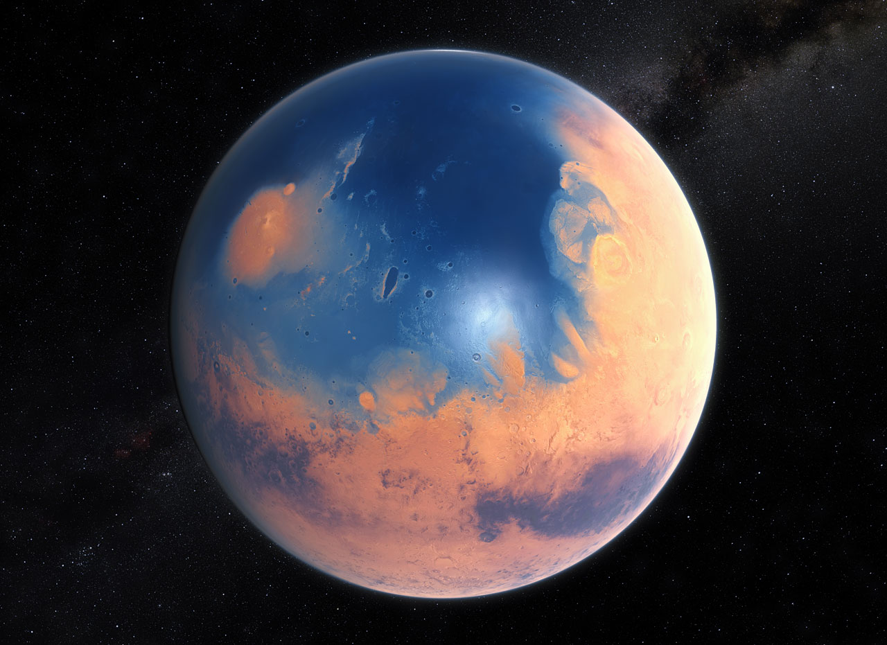

🔴 Marte: O Planeta que Perdeu seu Equilíbrio
Marte é um planeta frio e seco, com uma atmosfera fina que não consegue manter calor suficiente para sustentar água líquida de forma estável. Sua superfície é marcada por desertos e temperaturas extremas.
Apesar disso, há fortes evidências de que o planeta já teve rios, lagos e possivelmente oceanos, indicando um passado mais ativo e potencialmente habitável.
Um passado mais promissor
A perda de sua atmosfera ao longo do tempo transformou Marte em um ambiente hostil, levantando questões sobre sua evolução e possíveis formas de vida antigas.

🧭 Estrutura e Possibilidades
Marte é um planeta rochoso com formações geológicas marcantes, incluindo vulcões gigantes e vales profundos. Sua estrutura interna indica que já houve intensa atividade geológica.
Hoje, ele é o principal foco de exploração espacial, sendo considerado um candidato para futuras missões humanas.
Entre o passado e o futuro
Marte representa uma ponte entre a história do sistema solar e as possibilidades futuras da exploração humana.
